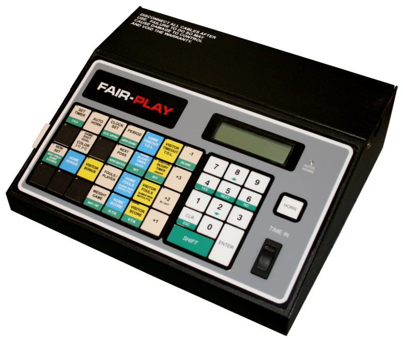

LEARN YOUR RINK'S CONTROLLER
Fair-Play MP-50 / MP-70
TIME IN rocker · penalty presets +1 / +2 / +3.
Functional hockey layout · exact insert positions pending verification · swipe sideways on a phone
Controller photo & manual · Fair-Play MP-50 / MP-70

Training configuration & limits
MP-50/70 common hockey workflow; fixed 2/5/10-minute presets, five penalties per side, no 10-minute indicator spots, goal indicators enabled. The manufacturer photo shows the housing with a basketball overlay. Hockey key groups are a functional training arrangement; exact hockey overlay positions remain unverified. OTHER multi-segment penalties, program menus, timeout configuration, interval configuration, shifted penalty tracking and automatic penalty-time correction are omitted. Correcting the main clock preserves penalty times in this trainer.
Documented Canadian use: Ray Friel, Ottawa, Ontario (family identified; model suffix unverified). Rink evidence ↗
Optional remote practice is available in Remote controls below the console. Review the accessory selector for supported hardware, connection rules and mode assumptions.